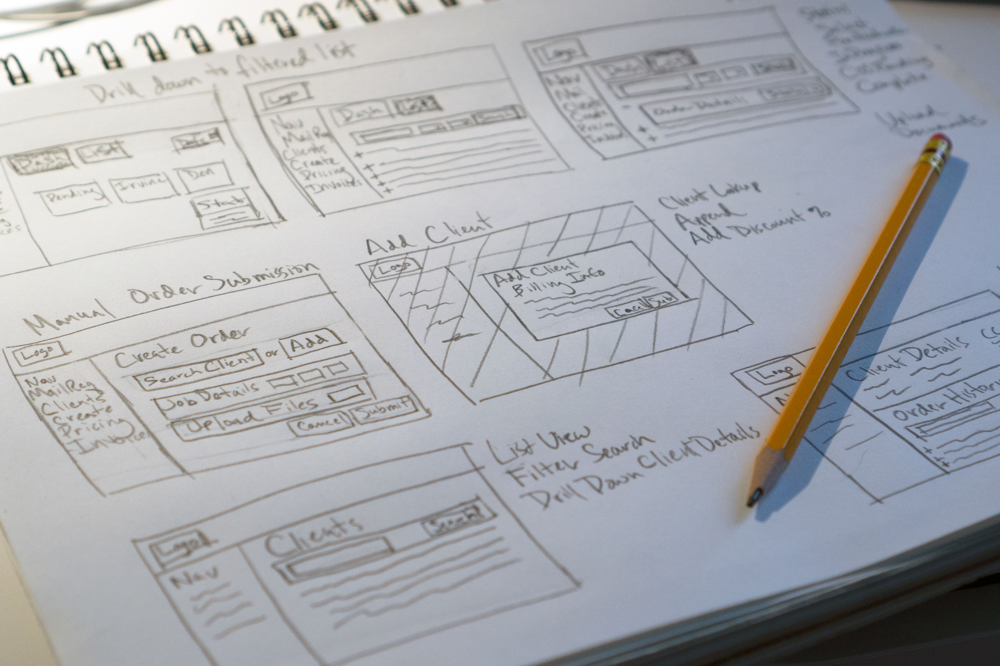

Designed order management system for print production facility.
Designed order management system for print production facility.
Order Management System (MVP)

Created new information architecture for Peapod Help section.
Help Section Redesign

Helped create interactive art installation that responds to proximity and touch.
Ice-Burg Project

Helped provide recommendations to Shedd Aquarium for improving exhibit accessibility.
Museum Exhibit Accessibility
Stretto • FinTech • Intranet Site
Stretto, a legal services company, had just acquired CINgroup, a competitor in the industry. CINgroup had been contracting out the printing and mailing of all its client's legal notices to to a third party vendor. Since Stretto had just invested in its own printing facility it was decided that this business should be brought in-house. I was tasked with designing a system that would integrate with CINgroup’s existing systems, and allow Stretto's print and mail facility to receive, manage and execute on those orders.
The type of business Stretto was attempting to capture is high volume, low margin. This meant that automation was needed in order to maintain a profit margin. In addition, it was decided that the contract with the third party printing vendor would not be renewed regardless, so we had to build an internal system that would allow Stretto's print facility to take over those orders. This only left several months to define an MVP, design the system, and documentation of requirements, and development.
Over the course of this project I conducted user interviews to understand the user's goals and pain points. I conducted a contextual inquiry to see how users carry out their work. I ran an affinity diagramming workshop with teammates to process the data and learn about the users together. I then synthesized user stories, user personas, and a user journey map from these insights. I ideated through rough sketches, wireframes, and a low fidelity prototype to get feedback from the stakeholder and developers. Finally I conducted a usability test on 5 end users to uncover any usability issues and to document and prioritize improvements to be made on the system.
I started out by creating a Research Protocol which communicated to the Business the business problem we're trying to solve, the methods I would be using, how long the process would take, and the expected deliverables. I then conducted user interviews with the Print Production Team. Next I conducted a contextual inquiry and observed their work process. I also analyzed their systems, tools and deliverables.
Retrieving a print job from the printer.

Loading the folding machine.
Unloading the envelope stuffer.
Signing off for quality control.
To process the transcripts from the user interviews I ran an affinity diagramming workshop with a team of Product Owners, Designers, and Developers. My motivation for the workshop was to get a cross functional team involved as early in the process as possible, so we all could learn about the users together. I also wanted to expose the team to the User Centered Design process since none of them had heard of it.
For the workshop I printed out excerpts from the interviews on colored index cards. I had team members highlight the important information and take notes. We then grouped the cards and taped them up on the wall. Over the course of two days we continued to sort and group the cards and together we distilled themes and insights from the data. At the end of the process the team commented that they enjoyed the collaborative hands on approach.
The following are categories the team pulled from the data:
Organized and ran a team affinity diagram workshop to process user interview data.
Categories that came out of affinity diagram workshop.
Close-up of High Level Process category.
Close-up of Tools category.
To aid in communication with Developers and QA testers, I distilled high level user stories from the insights that came out the affinity diagramming workshop.
| General Manager | Production Team Member |
|---|---|
| As a General Manager I want the creation of the Certificates of Service for the chapter seven trustee work to be automated to support a high volume of jobs. | As a Production Team member I need to be notified when a job comes in so that I can work on it. |
| As a General Manager I need to track inventory so that I can keep outsourcing to a minimum. | As a Production Team member I need to know the details of the print job so we can decide which facility takes the job. |
| As a General Manager I need to build models for forecasting demand so I can make staffing decisions. | As a Production Team member I need to know the details of the print job so I can estimate how long a job will take. |
| As a General Manager I need to minimize cost (inventory, vendors, contracts, staff, clients, workflows) so that I can maintain a profitable margin. | As a Production Team member I need to know the details of the print job so I will know what the output will be (USB, CD, DVD, Multi-plex, Coallated, Stapled) |
| As a General Manager I need to see job statuses of multiple production facilities so that I can act if problems arise. | As a Production Team member I need the Service List and the Document so that I can fulfill the print job. |
| As a General Manager I need to run reports so that I can bill the customer and manage payroll. | As a Production Team member I need to reconcile the batch count with the Service list so that the job is fulfilled acurately. |
| As a General Manager I need the production facilities to be ISO certified to minimize risk/liabilities. | As a Production Team member I need to know if the job is Domestic or International so that I can apply the correct postage. |
| As a General Manager I need processes to be documented for training team members and ISO compliance. | As a Production Team member I need to fill out a Pitney Bowes intake form so they can receive the mailings. |
| As a General Manager I need the decision process for routing jobs to each facility to be efficient to manage demand. | As a Production Team member I need to communicate with requesters regarding job details and status to get the job done accurately and notify when completed. |
| As a Production Team member I need to communicate with my teammates to ensure completion quality checks. | |
| As a Production Team member I need to communicate with teammates locally and offsite to manage capacity. |
To communicate the users' goals and pain points I created artifacts for the two personas that came out of the data - General Manager, and Production Team Member.
I also created a journey map to highlight the workflow of the General Manager and Production Team Member. The journey map illustrates a timeline of their process, their challenges, and opportunities for efficiencies. The Stakeholder who was sponsoring the project preferred to use the term "challenges" as opposed to pain points.
Due to the tight time-line it was decided that we would leverage CINgroup's existing system because they already had an infrastructure for user profiles and permissions, account lookup, and payment processing. This allowed me to focus on the user flows and interactions, and not have to worry about a brand new design system. First I drew rough sketches for the different screens, and then I created low fidelity wireframes. I was cognizant of incorporating existing modules and functionality that the developers could reuse for this system.
Mailing Requests - Dashboard
Mailing Requests - List View
Mailing Requests - List View - Filter Location

Mailing Requests - List View - Filtered by Location
Mailing Requests - List View - Sort Preferences
Mailing Requests - Order Details
Mailing Requests - Order Details - Locations
Mailing Requests - Order Details - Status
Clients - List View
Clients - List View - Filter by Chapter
Clients - Add Client
Clients - Client Detail - Order History
Clients - Client Details - Invoices
Create Order (Ch 7)
Create Order (Ch 7) - Add Client
Create Order (Ch 7) - Method of Service
Pricing
Invoices
From the data collected I was able to put together a complete picture of what the Production Team needed to carry out their work, and translate that into a low fidelity functional prototype. This prototype was useful for collecting feedback from the key stakeholder and the Development Team. I did not show the prototype to the Production Team because I wanted to keep them fresh for User Testing.

View Low-fi Interactive Prototype (Axure)
Before the release of the system to End Users I conducted a Usability Study with five Production Team members. From this study I documented and prioritized bugs and usability issues to be fixed. The majority of the issues I found related to connectivity and system performance issues.
"Tristan is a very thorough and focused UI/UX designer. I worked with him on a project where he was responsible for documenting and wire framing our company’s document production user experience in preparation of a significant software build. As a stakeholder of the project I was impressed with how quickly Tristan ramped up. He asked thoughtful and insightful questions that showed a true understanding of the process and set us up for success. His on-time UI/UX design deliverable was exactly what the business needed and had tasked him with. Tristan is very professional and is a valued team member."
- Frederick Brown, Vice President of Operations at Stretto
This project was quite challenging and rewarding on several fronts. The highlights for me were the feedback I got from the team when I ran the affinity diagramming workshop, and the gratitude expressed by the key stakeholder and his team. My motivation was to first solve user and business problems, but also boost my team's morale by introducing User Centered Design & Agile methodologies. In that regard I feel this projected was a great success.
Feel free to reach out to me regarding work opportunities. You may also find me on LinkedIn.
{kind=link}
{kind=link}
{kind=link}
{kind=link}
{kind=link}
{kind=link}
{kind=link}
{kind=link}
{kind=link}
{kind=link}
{kind=link}
{kind=link}
{kind=link}
{kind=link}
{kind=link}
{kind=link}
{kind=link}
{kind=link}
{kind=link}
{kind=link}
{kind=link}
{kind=link}
{kind=link}
{kind=link}
{kind=link}
{kind=link}
{kind=link}